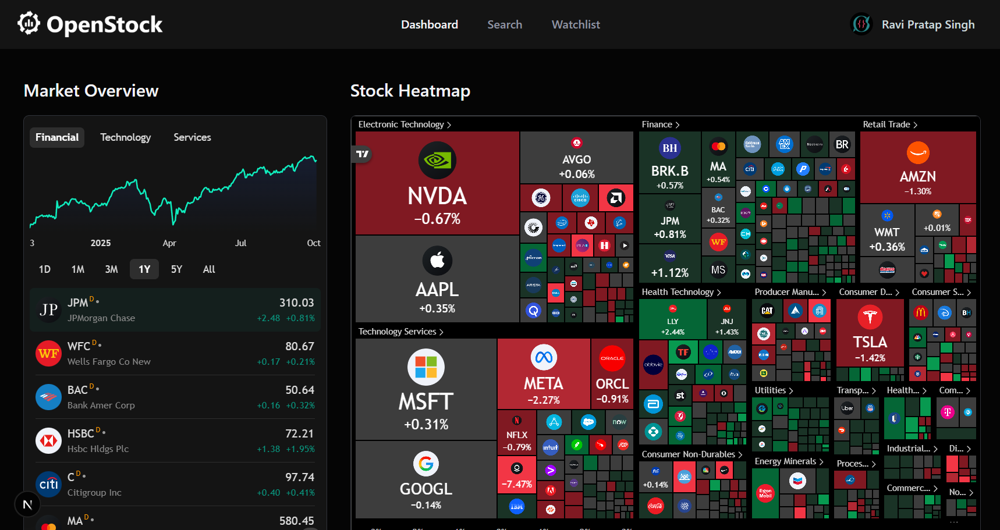

行情平台要订阅费，资讯散落在十个 App 里，AI 功能各管各的——OpenStock 把这三件事装进了一个开源项目：实时行情 + TradingView K线、跨平台市场情绪聚合、Gemini 生成新闻摘要发到你邮箱。免费、开源（AGPL-3.0）、一台机器就能自部署。
职业原因（安卓投资工具方向），我对"行情类产品怎么做"一直有职业性的好奇。市面上的路径基本两条：要么是券商/财经媒体的重客户端，功能全但闭源、处处订阅墙；要么是 GitHub 上的开源 watchlist 小玩具，一个搜索框加一张表，离"能日常用"差得远。
前两天刷到 OpenStock（Open Dev Society 出品），第一反应是"又一个 watchlist"，点进去发现判断错了：13,000+ 人在用，行情、资讯、AI 摘要、邮件推送做成了完整闭环。把它的代码翻了一遍之后，顺手做了一个中文版：bayshier/OpenStock-CN。这篇文章把值得说的功能和我看到的实现细节一起写掉。

行情展示部分 OpenStock 直接采用了 TradingView 的嵌入式组件——这是我认为它最聪明的决定。自研 K线图是个巨坑（我写过K线渲染器，深有体会），而 TradingView 组件把 symbol info、蜡烛图、高级图、Baseline、技术指标这些专业功能全部白送，还自带多语言。
数据层用 Finnhub API：股票搜索、公司资料、财务数据、市场新闻。个股页里 TradingView 的公司概览和财务组件直接吃 Finnhub 的数据，链路很短。全局搜索做了防抖，空闲时展示热门股票，Cmd/Ctrl + K 随时唤起——这个交互细节在金融产品里相当少见。
这是 OpenStock 最打动我的部分。散户的日常是：Reddit 看讨论 → 切到 X 刷情绪 → 再开一个财经网站看新闻 → 想看市场押注还要开 Polymarket。OpenStock 把这四个信息源聚合进了个股详情页，作为可选的跨源情绪洞察（sentiment insights）——一只股票的"基本面之外"发生了什么，一个页面看完。
行情之外还有市场全局：热图（heatmap）、实时报价、要闻（top stories），开盘前扫一眼就够了。
第三块是自动化。自建 Watchlist 存 MongoDB（每个用户每只股票唯一），然后是 AI 部分：
这里的技术选型值得点个赞：AI 推理和定时任务交给 Inngest（事件驱动 + cron），邮件走 Nodemailer。把"AI 生成"这种慢操作放进任务队列而不是请求链路里，主线程就不会被拖死——很多玩具项目死在这一步。
框架 Next.js 15 (App Router) + React 19 + TypeScript
UI Tailwind CSS v4 + shadcn/ui + Radix UI（默认深色主题）
认证 Better Auth（邮箱/密码）+ MongoDB Adapter
数据 MongoDB + Mongoose；行情来自 Finnhub
图表 TradingView 嵌入式组件
自动化 Inngest（事件/cron/Gemini 推理）+ Nodemailer
部署 Docker Compose 或 Vercel整套技术栈非常"当下"：React 19 + Tailwind v4 + shadcn/ui，想学现代全栈开发的话，这个仓库本身就是一份高质量的参考实现——项目结构、中间件保护路由、环境变量管理都做得规规矩矩。
README 提供了两条部署路径：
docker-compose.yml 一把梭，适合挂在自家 NAS / VPS 上；vercel.json，fork 之后填好环境变量（Finnhub key、MongoDB 连接串、Gemini key、Gmail 凭据）直接部署。需要自己申请的只有数据源和 AI 的 API key：Finnhub（免费档够用）、MongoDB Atlas（免费集群）、Gemini API key。整个过程不需要付任何订阅费。
原项目没有 i18n 机制，界面文案硬编码在 60 多个 TSX 文件里。我把全部用户可见的界面文案翻译成了简体中文——导航、仪表盘、个股页、Watchlist、营销页、错误提示，连同 README 一起：
AGPL-3.0 的要求很明确：修改后 redistribution 必须同协议开源并署名原作者——汉化版仓库保留了原 LICENSE 与出处说明。想自己部署中文版的，clone 下来按上面的部署路径走就行。
汉化版的第一增量顺理成章：仪表盘新增「中国 A股」和「香港」两个市场标签。A股分组覆盖消费白酒（贵州茅台、五粮液）、科技新能源（宁德时代、比亚迪、中芯国际）和金融（招商银行、中国平安）；港股覆盖腾讯、阿里、美团等科技股与汇丰、友邦等金融股。
个股页支持交易所前缀代码直接访问：/stocks/SSE:600519（贵州茅台）、/stocks/SZSE:300750（宁德时代）、/stocks/HKEX:00700（腾讯控股）。K线与技术指标来自 TradingView（延迟数据）；对 TradingView 嵌入不支持蜡烛图的交易所（如港股），个股页会优雅降级为"在 TradingView 打开图表"的引导。
已知限制：全局搜索暂不覆盖 A股/港股代码（走仪表盘分组或直接输网址）；顶部的实时报价条仍只对美股生效——这两项留给下一增量（接入腾讯/新浪行情接口或 Tushare）。
照例声明：项目社区维护、不是券商，行情数据可能按数据源规则有延迟，不构成投资建议。